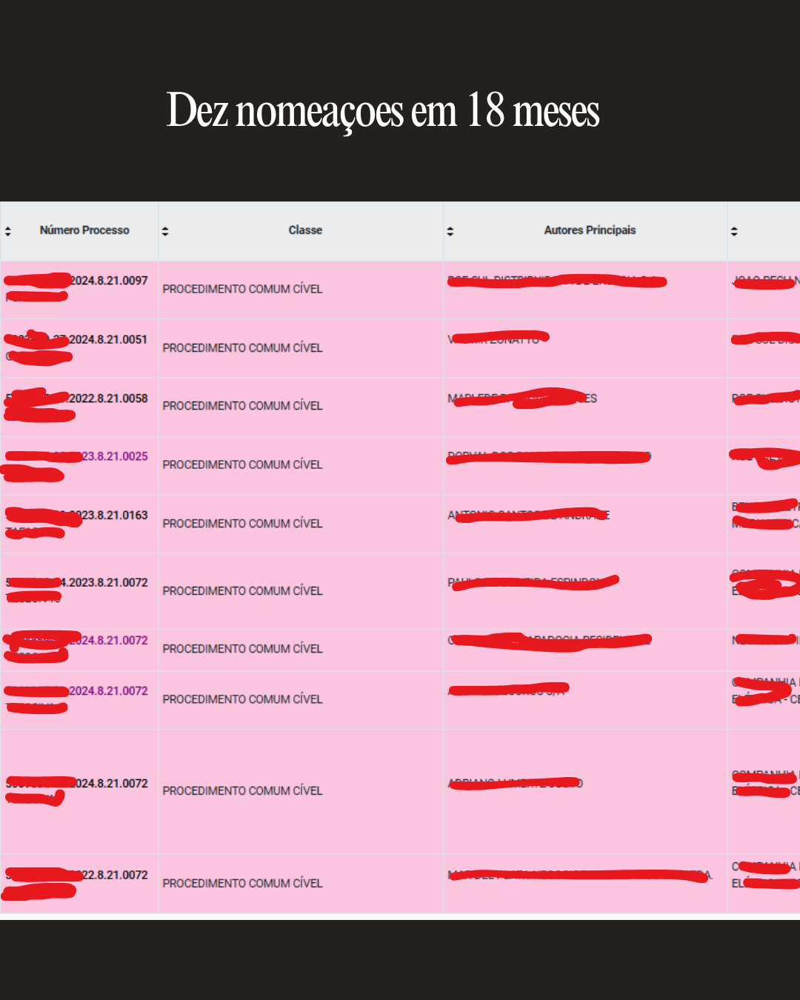
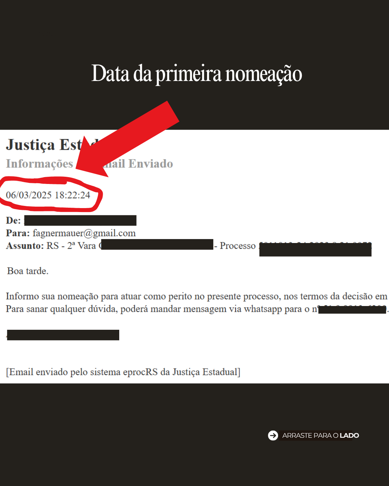

Sou Fagner Fabiano Mauer — Bacharel em Engenharia Elétrica, tecnólogo em Gestão da Produção Industrial, pós-graduado em Engenharia de Segurança do Trabalho, instrutor técnico em Eletrotécnica e Mecatrônica e Perito Judicial em atuação na Justiça Estadual.
Fazer faculdade, tirar o CREA e se cadastrar no site do Tribunal parece o suficiente. Não é. A maioria dos engenheiros cadastrados nunca recebe uma única nomeação — o sistema não chama sozinho quem só espera.
Enquanto isso, um grupo pequeno de peritos concentra praticamente todas as perícias da região, comarca após comarca.
O que muda esse resultado não é diploma nem tempo de cadastro: é entender a rotina cartorária, mapear as comarcas certas e ir atrás da nomeação em vez de esperar por ela. Foi assim que passei de cadastro parado a dez nomeações em um ano e meio.
Não existe fórmula de enriquecimento rápido nem atalho jurídico — existe rotina, posicionamento e segurança técnica na hora de assinar o laudo.
Meu objetivo não é ensinar teoria jurídica. É mostrar o caminho prático para transformar o cadastro pericial em uma fonte de renda real e respeitada — sem que você precise largar o emprego atual ou ficar refém do mercado tradicional.


27 petições editáveis em Word + 4 bônus para você peticionar com autoridade e economizar dezenas de horas em cada processo.
Conhecer o Kit